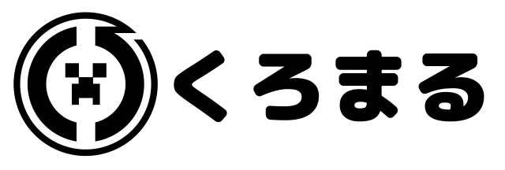

Lovmc.ml - らぶえむは、Java/BE両対応のマインクラフトサーバーです
アドレス
IP：Lovmc.ml
ポート：初期設定のまま
Switch等から接続する場合
関連リンク
Lovmc_Discord
再開発協議組合Discord
DynMap - 2D
BlueMap - 3D
Twitter
minecraft.jp
YouTube配信
Github - HP
© 2021 realryo1